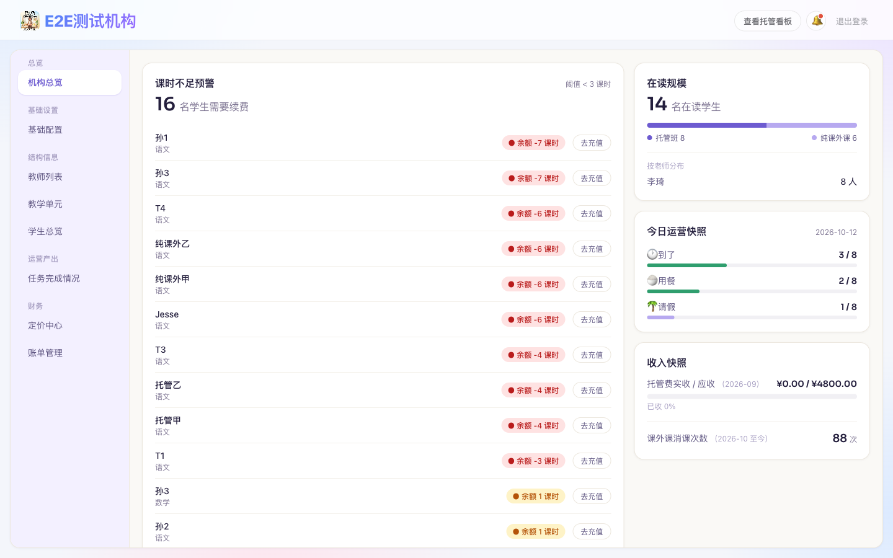
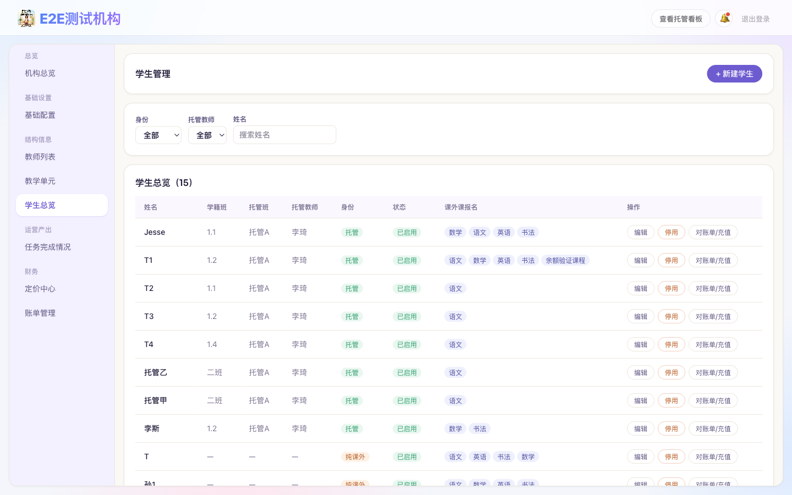
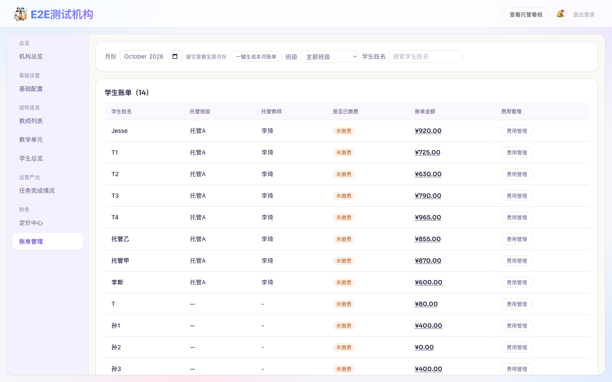
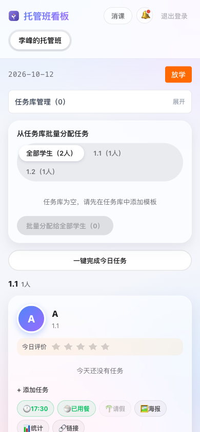
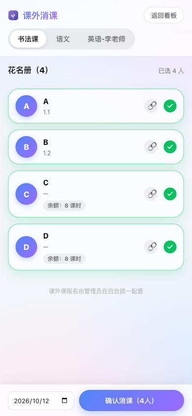
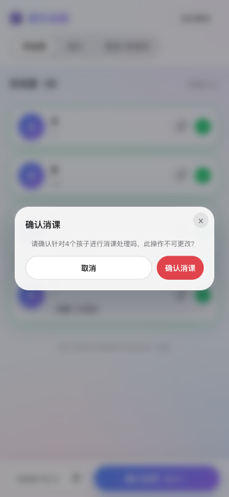
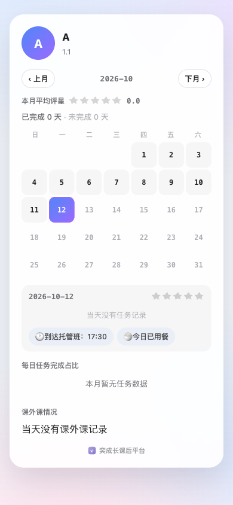

上面切换你的角色——机构管理员看"怎么把机构配起来"，教师看"每天怎么用看板和消课"。截图都是系统里的真实界面。
平台方会给你一个手机号和一个初始密码。第一次登录系统会强制跳到"修改密码"页面，必须改完密码才能进系统，改之前看不到任何其他页面。
登录后先去左侧「基础配置」，填机构名称、传 Logo。系统默认同时支持托管和课外课，不需要你额外开通。
左侧「教师列表」→「新增教师」，填手机号、姓名、初始密码，角色选「教师」（如果这个人也要帮你管后台，选「管理员」）。
创建成功后，初始密码会明文显示一次，记得马上截图或者口头告诉对方——系统不会再显示第二次。
左侧「教学单元」，分两种：
左侧「学生总览」→「新建学生」，填姓名、学籍班（孩子在学校的班级，和托管班是两回事）：
左侧「定价中心」：
这是登录后默认看到的页面，5 张卡片一眼看完今天的情况：

机构总览 · 5 张运营卡片
全机构所有学生一张列表，能按姓名搜索、按身份筛选。只要报了课外课的学生（不管是不是同时在托管班）这一行都会有「对账单/充值」按钮，点开能看到这个学生每门课的充值、消课和余额明细，也能直接帮他充值。

学生总览 · 全机构学生列表
月底在「账单管理」生成账单，两种方式：
每个学生的账单金额 = 托管学费（如果有托管班）+ 餐费（按实际用餐天数）+ 课外课费用（如果有）。生成好之后点进明细能看到每一项是怎么算出来的，核对无误后标记「已付」——标记已付时要选一下收款方式（现金/微信/支付宝/银行转账），方便月底按渠道对账；标记成未付会把之前选的收款方式清空。
列表上方有个「排序」下拉，可以按逾期天数优先或金额优先排，想先追最久没交的还是先追金额大的，切一下就行；没标「已付」的账单超过当月月底还没收到钱，会显示逾期了多少天。

账单管理 · 按班级/月份查看
管理员会给你一个手机号和初始密码，第一次登录会强制要求改密码，改完才能进系统。
如果你带托管班，登录后默认就在看板页。班级只能由管理员在后台创建——如果你还没有班，不是自己建，而是联系管理员帮你建班并指定给你。

托管看板 · 学生卡片
顶部点「消课」进入这个页面：

消课花名册

确认消课前的二次确认提示
每个学生卡片上都有 🔗「链接」和 🖼「海报」按钮，点开就能拿到这个孩子专属的分享内容，发到家长微信就行——家长不用注册、不用登录，点开链接直接看到孩子今天的情况和本月表现。

家长打开链接看到的样子